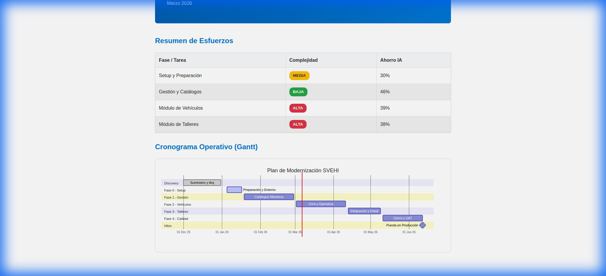

Plan de Modernización SVEHI
Estrategia de Transformación a Arquitectura ADA
Sistema de Vehículos — Junta de Andalucía
Arquitectura y Desarrollo — Modernización
Marzo 2026
Documento confidencial
Índice de Contenidos
- Introducción
- Análisis del Sistema Legacy
- Arquitectura Objetivo (ADA)
- Equipo y Capacidad
- Estimación Detallada por Fase
- Resumen de Esfuerzo Consolidado
- Cronograma del Proyecto
- Hitos y Entregables
- Riesgos y Mitigaciones
1. Introducción
Este documento detalla el plan integral para la modernización del sistema SVEHI (Sistema de
Vehículos de la Junta de Andalucía). El objetivo es la transición desde un monolito legacy Java/JSP hacia una
arquitectura moderna de microservicios alineada con el estándar ADA, permitiendo una mayor
mantenibilidad, escalabilidad y alineación con los estándares corporativos.
Alcance: La modernización cubre los módulos de Vehículos (con 9 sub-recursos), Gestión y
Administración (catálogos maestros, usuarios y perfiles), Talleres (servicios y reparaciones) y los servicios
transversales (flotas, grupos, seguridad).
2. Análisis del Sistema Legacy
| Aspecto |
Detalle |
| Stack Tecnológico |
Java (Servlet/JSP) + Spring MVC + Hibernate |
| Base de Datos |
Oracle 19c — Esquema BDD01 (BD corporativa de Presidencia) |
| Frontend |
JSP + Bootstrap 3 + DataTables + jQuery |
| Autenticación |
Certificado digital (popup selección) — se sustituye por SSOweb |
| Documentos |
Almacenados directamente en la BD Oracle (blobs) |
| Arquitectura |
Monolito con capas: Servlet → Service → Repository (DAO) |
Restricciones clave:
- La BD Oracle 19c (esquema BDD01) se mantiene sin modificaciones.
- No aplica integración @Firma ni Alfresco.
2.1 Módulos Funcionales
| Bloque |
Módulos |
| Vehículos |
Datos generales, Matrículas, Seguros, Tarjetas, Documentos, Equipamiento, Multas, Repostajes,
Tarifas Telepeaje |
| Gestión / Admin |
Usuarios, Perfiles, Permisos, Marcas, Modelos, Operadoras, Compañías, Conceptos, Parámetros,
Importación repostajes |
| Talleres |
Datos del taller, Servicios del taller, Reparaciones |
| Transversal |
Flotas, Grupos / Centros / Presupuestos, Tipos (catálogos) |
3. Arquitectura Objetivo (ADA)
| Componente |
Stack Tecnológico |
| Frontend (SPA) |
Angular 20, TypeScript 5.9, NGRX 20, Bootstrap JdA, Web Components @matter |
| ms-svehi-gestion |
Spring Boot 3, Java 21, Maven, ada-fwk-ms (puerto 8081) |
| ms-svehi-talleres |
Spring Boot 3, Java 21, Maven, ada-fwk-ms (puerto 8082) |
| API Design |
API-first (OpenAPI 3.0, Delegate Pattern) |
| Base de datos |
Oracle 19c — Esquema BDD01 (sin modificar) |
| Autenticación |
SSOweb Junta de Andalucía |
| CI/CD |
Pipeline Cadena Única ADA |
| Despliegue |
OpenShift / Kubernetes JdA (test/pre/pro) |
3.1 Distribución de Responsabilidades
ms-svehi-gestion
Gobierno del parque de vehículos, catálogos maestros, usuarios, repostajes, multas y documentación.
| Recurso API |
Entidad JPA |
Operaciones |
| /v1/vehiculos |
Vehiculo |
CRUD + búsqueda + paginación |
| /v1/vehiculos/{id}/matriculas |
VehiculoMatricula |
CRUD sub-recurso |
| /v1/vehiculos/{id}/seguros |
VehiculoSeguro |
CRUD sub-recurso |
| /v1/vehiculos/{id}/tarjetas |
VehiculoTarjeta |
CRUD sub-recurso |
| /v1/vehiculos/{id}/documentos |
VehiculoDocumento |
CRUD sub-recurso (blob) |
| /v1/vehiculos/{id}/equipamientos |
Equipamiento |
CRUD sub-recurso |
| /v1/vehiculos/{id}/multas |
Multa |
CRUD sub-recurso |
| /v1/vehiculos/{id}/repostajes |
Repostaje |
CRUD sub-recurso |
| /v1/vehiculos/{id}/tarifas-telepeaje |
TarifaTelePeaje |
CRUD sub-recurso |
| /v1/marcas, /v1/modelos |
Marca, Modelo |
CRUD + filtro por marca |
| /v1/operadoras, /v1/companias |
Operadora, Compania |
CRUD |
| /v1/parametros, /v1/tipos |
Parametro, Tipo |
CRUD + filtro / solo lectura |
| /v1/usuarios, /v1/perfiles, /v1/permisos |
Usuario, Perfil, Permiso |
CRUD |
| /v1/flotas, /v1/grupos |
Flota, Grupo |
CRUD con sub-recursos |
| /v1/repostajes/importacion |
Importación masiva |
Upload + procesado + errores |
ms-svehi-talleres
Gestión de talleres, sus servicios y el registro de reparaciones de vehículos.
| Recurso API |
Entidad JPA |
Operaciones |
| /v1/talleres |
Taller |
CRUD + búsqueda + paginación |
| /v1/talleres/{id}/servicios |
TallerServicio |
CRUD sub-recurso |
| /v1/talleres/{id}/reparaciones |
TallerReparacion |
CRUD sub-recurso |
| /v1/reparaciones |
TallerReparacion |
Búsqueda global |
| /v1/conceptos-reparacion |
ConceptoReparacion |
CRUD catálogo |
4. Equipo y Capacidad
| Rol |
Personas |
Capacidad diaria |
Capacidad por fase |
| Desarrollador Backend |
2 |
8h × 2 = 16h/día |
Esfuerzo back ÷ 2 = días calendario |
| Desarrollador Frontend |
1 |
8h × 1 = 8h/día |
Esfuerzo front = días calendario |
Criterio de duración por fase: Los equipos de backend y frontend trabajan en paralelo dentro de
cada fase. La duración calendario de cada fase viene determinada por el máximo entre la
duración back (esfuerzo ÷ 2) y la duración front (esfuerzo ÷ 1).
Jornada: 8 horas/día (1 jornada = 1 día laborable).
Inicio del desarrollo: 1 de enero de 2026.
5. Estimación Detallada por Fase
Fase 0 — Preparación
| Tarea |
Peso |
Back (j) |
Front (j) |
Ajust. Back |
Ajust. Front |
| Scaffolding SPA + 2 MS |
MEDIA |
4 |
3 |
2.2 |
1.65 |
| Docker Compose dev local |
BAJA |
2 |
0 |
1.4 |
0 |
| Gestión DevSecOps + Pipeline |
BAJA |
2 |
0 |
1.6 |
0 |
| Conectividad Oracle BDD01 |
BAJA |
2 |
0 |
1.7 |
0 |
| Integración SSOweb |
ALTA |
4 |
3 |
3.2 |
2.4 |
| Totales Fase 0 |
|
14 |
6 |
10.1 |
4.05 |
Duración calendario: max(10.1÷2, 4.05÷1) = max(5.1, 4.1) = 6 días laborables
Fase 1 — Gestión y Catálogos (S1-S3)
| Módulo |
Peso |
Back (j) |
Front (j) |
Ajust. Back |
Ajust. Front |
| Marcas |
BAJA |
2 |
2 |
1 |
1 |
| Modelos (+ filtro marca) |
BAJA |
2 |
2 |
1.1 |
1.1 |
| Operadoras |
BAJA |
2 |
2 |
1 |
1 |
| Compañías |
BAJA |
2 |
2 |
1 |
1 |
| Conceptos |
BAJA |
2 |
2 |
1 |
1 |
| Tipos (solo lectura) |
BAJA |
1 |
1 |
0.5 |
0.5 |
| Parámetros (+ filtro tipo) |
BAJA |
2 |
2 |
1.1 |
1.1 |
| Usuarios (+ perfiles) |
BAJA |
2 |
2 |
1.2 |
1.2 |
| Perfiles (+ permisos) |
BAJA |
2 |
2 |
1.2 |
1.2 |
| Permisos |
BAJA |
1 |
1 |
0.5 |
0.5 |
| Flotas / Grupos |
BAJA |
2 |
2 |
1.2 |
1.2 |
| Totales Fase 1 |
|
20 |
20 |
10.8 |
10.8 |
Duración calendario: max(10.8÷2, 10.8÷1) = max(5.4, 10.8) = 11 días laborables
Fase 2 — Vehículos (S4-S6)
| Módulo |
Peso |
Back (j) |
Front (j) |
Ajust. Back |
Ajust. Front |
| Vehículo CRUD + filtros + paginación |
ALTA |
6 |
5 |
4 |
3.5 |
| Matrículas (sub-recurso) |
MEDIA |
3 |
3 |
1.5 |
1.5 |
| Seguros (sub-recurso) |
MEDIA |
3 |
3 |
1.5 |
1.5 |
| Tarjetas (sub-recurso) |
MEDIA |
3 |
3 |
1.5 |
1.5 |
| Documentos (blob BD) |
ALTA |
5 |
4 |
3.5 |
3 |
| Equipamiento (sub-recurso) |
MEDIA |
3 |
2 |
1.5 |
1 |
| Multas (sub-recurso) |
MEDIA |
3 |
3 |
1.5 |
1.5 |
| Repostajes (sub-recurso) |
MEDIA |
3 |
3 |
1.5 |
1.5 |
| Tarifas Telepeaje |
MEDIA |
3 |
2 |
1.5 |
1 |
| Importación masiva repostajes |
ALTA |
6 |
4 |
5 |
3 |
| Totales Fase 2 |
|
38 |
32 |
23 |
19.5 |
Duración calendario: max(23÷2, 19.5÷1) = max(11.5, 19.5) = 20 días laborables
Fase 3 — Talleres (S7-S8)
| Módulo |
Peso |
Back (j) |
Front (j) |
Ajust. Back |
Ajust. Front |
| Taller CRUD + búsqueda + paginación |
ALTA |
6 |
5 |
3.6 |
3 |
| Servicios del taller (sub-recurso) |
ALTA |
5 |
4 |
2.75 |
2.2 |
| Reparaciones + búsqueda global |
ALTA |
6 |
5 |
4.2 |
3.5 |
| Conceptos reparación |
ALTA |
5 |
4 |
2.5 |
2 |
| Integración HTTP ms-gestion |
ALTA |
6 |
0 |
4.8 |
0 |
| Totales Fase 3 |
|
28 |
18 |
17.85 |
10.7 |
Duración calendario: max(17.85÷2, 10.7÷1) = max(8.9, 10.7) = 11 días laborables
Fase 4 — Calidad (S9-S10)
| Tarea |
Peso |
Back (j) |
Front (j) |
Ajust. Back |
Ajust. Front |
| SSOweb validación completa |
MEDIA |
2 |
2 |
1.6 |
1.6 |
| Tests E2E |
ALTA |
4 |
3 |
2.6 |
1.95 |
| Accesibilidad WCAG |
MEDIA |
1 |
3 |
0.75 |
2.25 |
| Documentación técnica |
MEDIA |
2 |
1 |
1.2 |
0.6 |
| UAT (equipo externo) |
EXTERNA |
0 |
0 |
0 |
0 |
| Totales Fase 4 |
|
9 |
9 |
6.15 |
6.4 |
Duración calendario: max(6.15÷2, 6.4÷1) = max(3.1, 6.4) = 7 días laborables
La UAT no computa esfuerzo de desarrollo ya que la realiza un equipo externo, pero se mantiene
como hito en el cronograma.
6. Resumen de Esfuerzo Consolidado
| Fase |
Esfuerzo Back (j) |
Esfuerzo Front (j) |
Duración Back (÷2) |
Duración Front (÷1) |
Duración Fase |
| Fase 0 — Setup |
10.1 |
4.05 |
5.1 días |
4.1 días |
6 días |
| Fase 1 — Gestión |
10.8 |
10.8 |
5.4 días |
10.8 días |
11 días |
| Fase 2 — Vehículos |
23 |
19.5 |
11.5 días |
19.5 días |
20 días |
| Fase 3 — Talleres |
17.85 |
10.7 |
8.9 días |
10.7 días |
11 días |
| Fase 4 — Calidad |
6.15 |
6.4 |
3.1 días |
6.4 días |
7 días |
| SUBTOTAL |
67.9 |
51.45 |
|
|
55 días |
| Métrica |
Valor |
| Esfuerzo total (jornadas) |
~120 jornadas (67.9 back + 51.45 front) |
| Esfuerzo total (horas) |
~955 horas (a 8h/jornada) |
| Duración calendario (sin buffer) |
55 días laborables (~11 semanas) |
| Buffer contingencia (+15%) |
+8 días laborables |
| Duración total con buffer |
63 días laborables (~13 semanas) |
| Equipo |
2 desarrolladores backend + 1 desarrollador frontend |
| Ahorro estimado por IA |
~37% sobre esfuerzo base (~194 jornadas → ~120 jornadas) |
7. Cronograma del Proyecto
Inicio del desarrollo: 1 de enero de 2026. Equipo: 2 backend + 1 frontend. Jornada de 8 horas.
| Fase / Hito |
Duración |
Inicio |
Fin |
| Discovery — Análisis y Arquitectura |
4 semanas |
01 Dic 2025 |
30 Dic 2025 |
| Fase 0 — Setup y Preparación |
6 días |
01 Ene 2026 |
08 Ene 2026 |
| Fase 1 — Gestión y Catálogos |
11 días |
09 Ene 2026 |
23 Ene 2026 |
| Fase 2 — Vehículos |
20 días |
26 Ene 2026 |
20 Feb 2026 |
| Fase 3 — Talleres |
11 días |
23 Feb 2026 |
09 Mar 2026 |
| Fase 4 — Calidad y UAT |
7 días |
10 Mar 2026 |
18 Mar 2026 |
| Buffer contingencia (+15%) |
8 días |
19 Mar 2026 |
31 Mar 2026 |
| M4 — GO-LIVE |
ENTREGA FINAL |
|
31 Mar 2026 |

8. Hitos y Entregables
| Hito |
Fecha |
Entregables |
| Discovery OK |
30 Dic 2025 |
Análisis, arquitectura y plan aprobados |
| M0 — Inicio |
01 Ene 2026 |
Entorno configurado, repos en pipeline, Oracle OK |
| M1 — Gestión |
23 Ene 2026 |
Catálogos + Usuarios/Perfiles/Permisos operativos |
| M2 — Vehículos |
20 Feb 2026 |
Gestión completa de vehículos con 9 sub-recursos |
| M3 — Talleres |
09 Mar 2026 |
Talleres, servicios y reparaciones con integración |
| M4 — Go-Live |
31 Mar 2026 |
Sistema completo, tests E2E, documentación, UAT |
9. Riesgos y Mitigaciones
| Riesgo |
Prob. |
Impacto |
Mitigación |
| Mapeo JPA contra tablas Oracle legacy |
Alta |
Alto |
Dedicar Fase 0 a verificar mapeo; @Column/@Table explícitos |
| Integración SSOweb |
Media |
Alto |
Consultar docs ADA SSOweb, soporte equipo seguridad JdA |
| Dependencia librerías ADA privadas |
Alta |
Alto |
Validar disponibilidad Maven al inicio |
| Tiempos DevSecOps para pipeline |
Media |
Medio |
Iniciar gestiones en paralelo al scaffolding |
| Performance Oracle (sin control sobre índices) |
Media |
Alto |
Queries nativas @Query donde necesario |
| Cuello de botella 1 dev frontend |
Alta |
Alto |
Priorizar componentes compartidos y reutilización de patrones |
Este documento es propiedad confidencial y está destinado exclusivamente a la planificación del proyecto SVEHI.